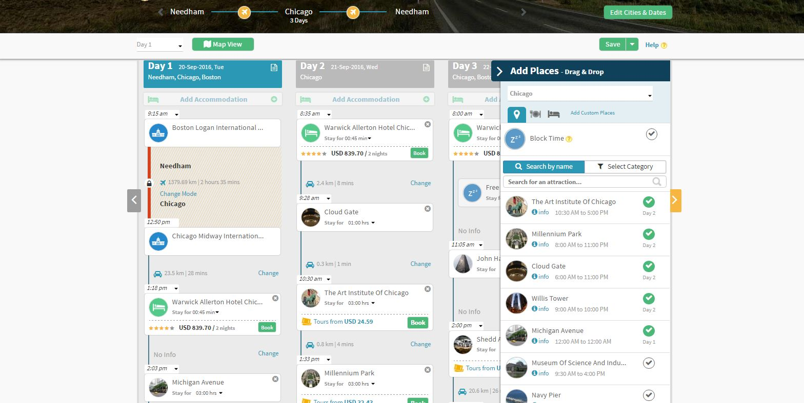
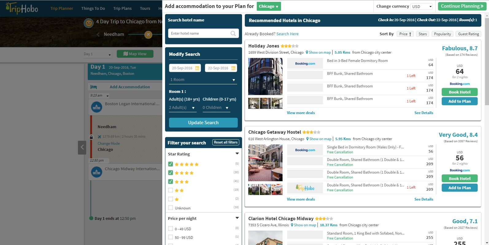

TripHobo.com is a service very similar to our idea; creating schedules and finding points of interest for people who are traveling. The service also helps book hotels and schedules in enough time for traveling from one location to another.

The website opens by letting you select what city you are traveling to. It then suggests flights from where you are to the city you selected, allowing you to change the dates and the flights very simply. You can then either plan your own trip, or allow the service to plan for you.
When you allow the service to plan for you, a sliding popup loads with suggested hotels, with rankings and reviews. Once you dismiss that, the actual schedule is revealed. This UI is very well done, allowing drag-and-drop repositioning of any events/activities and meals. You can very easily “Add Places” using the menu, which lists the top suggested attractions in the city, including museums, food and other fun things to do. There is a separate schedule for each day and the activities are planned according to the suggested time that it takes to do each of them. In order to give you a general idea of how far you’ll be traveling, there is a map view that shows all of the attractions located throughout the city. In an especially clever piece of planning, each day’s schedule begins and ends at your hotel.

Overall, the design for this service is very well done, with intuitive controls and easily modifiable content. It is thorough without being overwhelming, which can be a very difficult balance to achieve. For planning a basic, multi-day trip to a city, this seems to be a very easy way to reach the most popular sites without stressing about planning it all yourself. One weakness of the site is that there is a lot of stuff happening. It’s not completely overwhelming, but it is a lot of information at once, ranging from flights to hotels to tours. While the website does help you book everything, it is still a lot of information that you have to enter and hope it works integrating with the partner sites. Another weakness is the lack of mobile site. When you try and plan a trip while on a mobile device, it just suggests that you download the app, which is addition effort and phone space that many people aren’t willing to deal with. Other than the stress of booking things and the lack of a mobile site, there really isn’t that much that TripHobo can improve on and we are planning on taking a lot of inspiration from them, especially the drag-and-drop scheduling and the map view. We are planning on learning from the TripHobo weaknesses and creating a mobile site, while also not integrating everything about travel into one planner in an effort to keep it simple.
Audience
Anyone planning a multi-day trip to a city they don’t know by inputting the location destination and then offering suggestions for where to stay and what to do while there
Features
helps book a hotel and other activities, offers a lot of options, interactive (drag and drop options)
Improvements
possibly overwhelming amount of information, popup screens that interfere with the natural flow of the website, no mobile website (must download app)